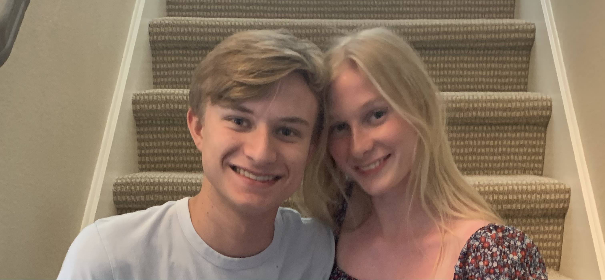

Hello, my name is Austin Dlugosch. I love spending time with family because they are a large inspiration for me to keep learning. In school, I am a junior at Allen High School, and I am involved in many different activities like Band, Computer Science, and Spanish Honor Society. While I am still learning the basics of Computer Science, I am an inquisitive person and love to learn new tricks and methods to solve problems and create. I love the struggle in solving problems and especially the feeling of that realization moment. I hope to improve in all of the many aspects of Computer Science, but specifically in the areas of software development and video game design.
